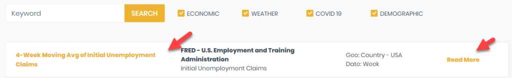
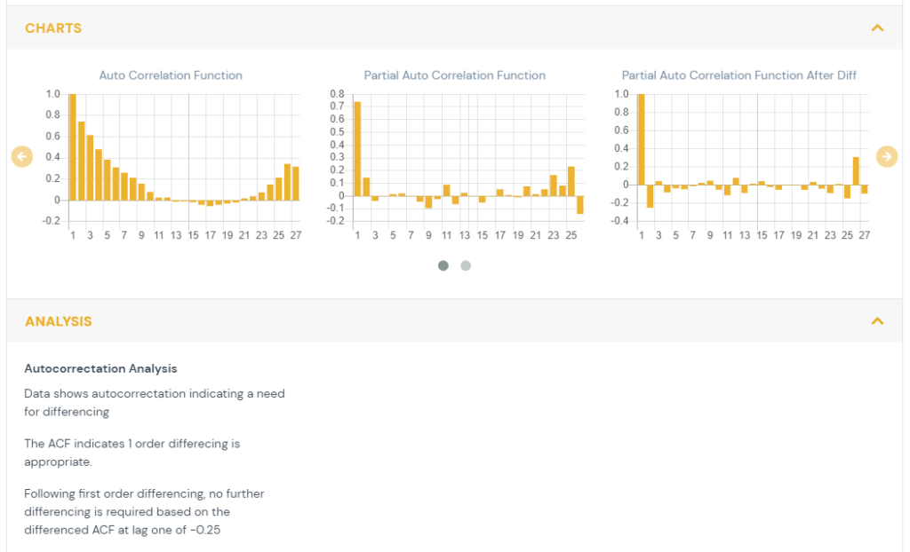
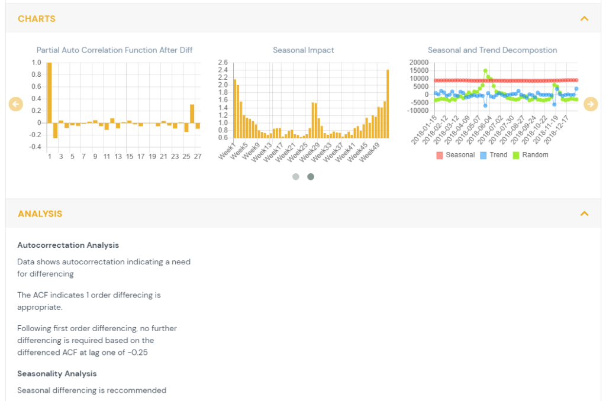
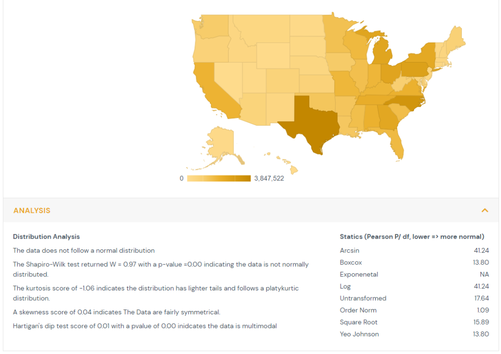

Overview of Feature Details Page
This article walks through the different sections of the Feature/Data details page on the RS platform. This page provides more detail on a data set, along with guidance on data science treatments to consider applying.
Feature Detail Page:
Accessible From:
You can access the data details page by clicking on the feature name from the Data Sets page of the Ready Signal website:

Or by clicking on the feature name while adding features to a signal:
Importance in Data Science Treatment Selection
There are a variety of Data Science Treatments you can apply to features within a signal. These DS treatments can greatly improve the usefulness of your data. Note that these treatments are applied at the individual feature level.
TIP: Each feature offered by Ready Signal undergoes a transformation analysis to determine its suitability to be used in modeling in its raw form. Users can test the data science transformations suggested by adding both the untransformed feature and the feature using the recommended treatments to their signal in order to test its fit and predictive power in their analysis.
Details Page Components
1) Feature Specs
This section provides an overview of the data. Source, release, units and frequency are provided in order to understand where they data comes from, what form it takes and how often it is updated. The data is graphed over time for time series data and geographically for point in time data. The ‘Why Use’ section gives a brief overview of the benefit of using this data stream in analyses. The suggested transformation provides a recommendation of how to best transform the data in order to improve normality and, for time series data, ensure the data is stationary, not autocorrelated, and not seasonally impacted. Details for the suggestions and their rationale are provided below.
2) Time Series Analysis

Time series analysis is conducted on features which have repeated measures over time at a set interval. The data is tested for autocorrelation (also referred to as serial correlation. This looks at whether observations are independent over time.
In order to determine the cases when the prior values of a time series have an influence on the current value and autocorrelation function (ACF) is used. The ACF computes the correlation between the current value and previous values in time. The ACF plot shows the correlation between the current value (T) and the K previous values (T-1,T-2,…,T-K).
- When autocorrelation is present, constant or slowly diminishing across values of K then there is autocorrelation present and differencing {hyperlink to data transforms page} is recommended.
The partial autocorrelation function (PACF) is the correlation of a lag after the computation of the previous lags. This allows the viewer to determine if additional differencing is needed beyond the first order.
- Peaks at intervals representing a year indicate there may be a need for seasonal differencing.
The autocorrelation function (ACF) after first order differencing is also shown. This indicates the residual correlation after the data has been differenced.
- If it shows a sustained autocorrelation than further differencing is required.
- If it is near zero or slightly negative, then no further differencing is needed.

The feature is also tested for stationarity. A time series is considered stationary when its mean and variance are constant over time. The Kwiatkowski–Phillips–Schmidt–Shin (KPSS) test measures if the feature is stationary around the mean or linear trend. It decomposes data into a trend component, a random walk, and an error term. The null hypothesis is that the data is stationary. P-values of less than 0.05 indicate the data is not stationary. This test is used to recommend whether or not the data should be differenced. {hyperlink to data transforms page}
3) Seasonality

For data that is quarterly, monthly, weekly or daily a seasonality analysis is performed. The data is decomposed into a trend component, a seasonal component and a random component. The process computes the trend through a moving average, the seasonality by averaging each time period across years and the remainder becomes the error term. The multiplicative seasonality is shown as the seasonal impact. {hyperlink to data transforms page} The seasonality levels are quarterly for quarterly data, monthly for both monthly and daily data, and weekly for weekly data. A seasonal unit root test utilizes a measure of seasonal strength to recommend if seasonal differencing is required.
4) Normality

Each feature, both time series and point in time, undergoes a distribution analysis.
The Shapiro-Wilk test compares the order distribution of the feature to the expected values of standard normal distribution. The null hypothesis is the data is normally distributed. In cases where the p-values are less than 0.05 then the message is shown that the data is not normally distributed.
The kurtosis is computed which measures the thickness of the distribution’s tails relative to the normal distribution. When kurtosis is greater than one it indicates the distribution has heavier tails and follows a leptokurtic distribution. When kurtosis is less than negative one it indicates the distribution has lighter tails and follows a platykurtic distribution. When kurtosis is between negative one and one it indicates the distribution is relatively normal and follows a mesokurtic distribution.
The skewness is computed which measures the symmetry of the feature’s distribution. Absolute values greater than 1 show substantial skewness.
Hartigan’s dip test is computed to estimate if the feature comes from a unimodal distribution. It examines the feature distribution function and the unimodal distribution function. The null hypothesis is that the data is unimodal. P-values of less than 0.05 indicate the data is multimodal.
Finally a series of transformations are tested to determine if they improve the normality of the data. The Pearson test statistic is across classes that are equiprobable under the hypothesis of normality. The transformation with the lowest Pearson statistic is recommended to improve normality.